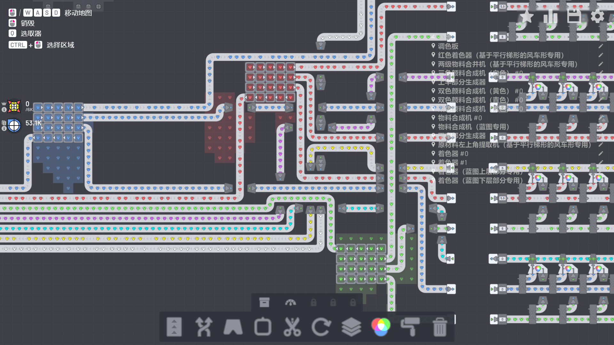
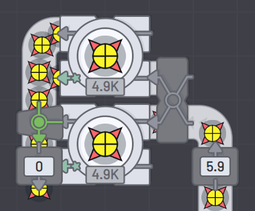

我的一些在 shapez.io 中的设计
在三天前，我的友人魔王殿给我推荐了一款 shapez.io 的游戏。 我大概玩了 20 个小时，感觉这是一款自动化生成类型的开源的沙盒游戏。 这款游戏非常不错，只是我今天把其卸载了，毕竟我不想让自己沉迷其中。 说的这么冠冕堂皇，其实还是接下来一段时间我需要一些重要的事情而已。（笑）
虽然是卸载了，但是过段时间我应该还会再次游玩，为了保险起见我备份了自己的存档。 顺便分享下我在其中做的一些设计，当然魔王殿在这方面指点了我不少。
由于 shapez.io 只提供红绿蓝三色的直接采集，其他四色即白黄青紫需要使用颜色合成单元进行合成。
首先展示一下三色颜料合成机，也就是白色合成机的实现。
由于传送带的速度为 6 个每秒，而颜色合成单元的速度为 0.6 个每秒，于是需要对其进行并行化。 在这里我们只需要采用均衡器和隧道来实现把原色尽可能多的分配个颜色处理单元， 然后最后使用合并器对结果进行合并，以提升传送带的利用效率。
依葫芦画瓢，同理可得双色颜料合成机，也就是黄色、青色和紫色合成机的实现。
为了更好的使用采集与合成的颜料，于是我打算对其进行中心化管理，这是我引入调色盘概念的原因。 下面两图分别是调色盘前端和和调色盘整体的实现。

由于在后面的关卡解锁了蓝图，终于可以在其中有条件的复制粘贴了，虽然要耗费某种最终材料，下文简称蓝图。 为了更方便的复制粘贴，所以我对蓝图的制造实现了自动化，下图是其整体结构。
虽然看起来比较复杂，但如果按照前面制造颜料合成机的方式，制造着色器和合并机就不会感觉到困难。 当然，你说造起来比较麻烦，其实也不一定。 因为之前解锁蓝图的时候会预先制造一些蓝图，于是你可以对一些简单的单元进行复制粘贴。 详细结构可参考下图。
由于该游戏的通关和基本制造单元的升级条件需要制造一些奇形怪状的图形，于是设计一个高效率的切割机是必由之路。 由于该游戏要求比较多，所以我只展示最基本的实现，也就是对对称图形进行切割然而输出其上半或下半部分。
对并行化的着色器、合并机和切割机的设计进行调整和组合，可以满足该游戏的大部分要求。 譬如这是一个生成由四个直角梯形组成的风车图形的制造单元。
由于我通过了第十五关，解锁了仓库，仓库可以帮助玩家更好的计划物件的生产，个人觉得这玩意类似计算机中缓冲区的概念。 这是我的简单并行仓库，主要是为了通过第十六关，虽然真正通过估计要过段时间了。

当然忘记说了，shapez.io 要通关的话，所有的产物都得交给基地，下图展示下这个要求颇多的物件。
总之，这游戏挺好玩的，感谢魔王殿的推荐，笑。
本博客所有文章除特别声明外，均采用 CC BY-NC-ND 4.0 协议 ，转载请注明出处！